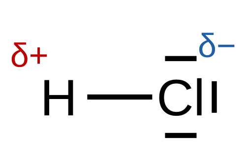
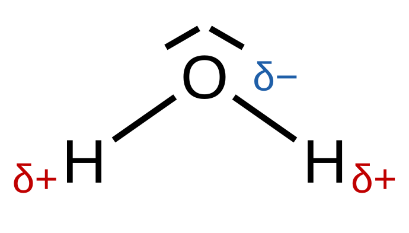
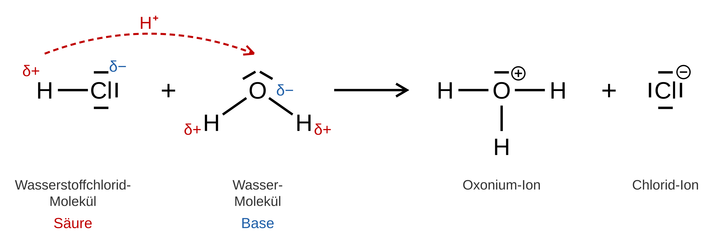

So nutzen Sie die Hilfen: Versuchen Sie es erst allein. Öffnen Sie dann Hilfe 1, danach Hilfe 2. Die Lösung dient zur Kontrolle – vergleichen Sie sie mit Ihrer eigenen Antwort und verbessern Sie diese.
Aufgabe 1: Springbrunnenversuch auf Stoffebene
Erklären Sie das Einströmen des Wassers und formulieren Sie eine Schlussfolgerung!
Hilfe 1
Was geschieht mit dem Gas, wenn die ersten Wassertropfen in den Kolben gelangen? Wie verändert sich dadurch der Druck im Kolben?
Hilfe 2
Indikator gelb → welche Art von Lösung? Leitfähigkeit → welche Teilchen sind entstanden?
Lösung (erst nach eigenem Versuch öffnen!)
a) Wasserstoffchlorid löst sich extrem gut in Wasser → Unterdruck im Kolben → der Luftdruck drückt Wasser nach. b) Es entsteht eine saure, leitfähige Lösung (Salzsäure) – Ionen sind entstanden, also hat eine chemische Reaktion stattgefunden.
Aufgabe 2: Hypothesenbildung: Wasserstoffchlorid + Wasser
Entwickeln Sie eine Hypothese und formulieren Sie die Strukturformelgleichung!
Hilfe 1
Impulskarte 1: Tragen Sie die Partialladungen (δ+ / δ−) in die Strukturformeln ein.


Hilfe 2
Impulskarte 2: Das Ende eines Moleküls mit negativer Partialladung nähert sich einem Ende mit positiver Partialladung. Skizzieren Sie dies.
Hilfe 3
Impulskarte 3: Formulieren Sie die möglichen Ionen durch Übertragung eines Protons (H⁺). Achten Sie darauf, dass ein Teilchen eine positive und ein Teilchen eine negative Formalladung trägt.
Lösung (erst nach eigenem Versuch öffnen!)

HCl + H₂O → H₃O⁺ + Cl⁻
Aufgabe 3: Protonenübergang beschreiben
Beschreiben Sie den Vorgang mit Fachbegriffen!
Hilfe 1
Verfolgen Sie die Elektronenpaare: Das bindende Paar der H–Cl-Bindung bleibt beim Cl-Atom → ? Ein freies Paar des O-Atoms bindet das Proton → ?
Lösung (erst nach eigenem Versuch öffnen!)
Das δ+-H-Atom wird als Proton (H⁺) an ein freies Elektronenpaar des O-Atoms abgegeben. Das bindende Elektronenpaar bleibt am Cl-Atom → Chlorid-Ion. Das freie Paar am O wird zum bindenden Paar → Oxonium-Ion H₃O⁺ (Formalladung +1 am O).
Aufgabe 4: Kochsalz-Lösung und Salzsäure
Benennen Sie die Teilchen und begründen Sie, welche für die sauren Eigenschaften verantwortlich sind!
Hilfe 1
Impulskarte 5: Die Kochsalz-Lösung ist eine neutrale Lösung. Benennen Sie die Teilchen der Kochsalz-Lösung.
Hilfe 2
Welches Ion kommt in beiden Lösungen vor? Kann es dann die Ursache für „sauer“ sein?
Lösung (erst nach eigenem Versuch öffnen!)
Kochsalz-Lösung: Na⁺, Cl⁻, H₂O · Salzsäure: H₃O⁺, Cl⁻, H₂O. Cl⁻ ist in beiden enthalten, die Kochsalz-Lösung ist aber neutral → die Oxonium-Ionen verursachen die sauren Eigenschaften.
Aufgabe 5: Steckbrief Salzsäure
Beurteilen und korrigieren Sie den Steckbrief!
Hilfe 1
Ist Salzsäure ein Reinstoff oder ein Gemisch? Hat ein Gemisch eine Summenformel?
Hilfe 2
Wozu gehört die Formel HCl – zum Gas Wasserstoffchlorid oder zur Lösung?
Lösung (erst nach eigenem Versuch öffnen!)
Stoff und Teilchen werden verwechselt: HCl ist das Wasserstoffchlorid-Molekül, der Reinstoff ist ein Gas. Salzsäure ist eine wässrige Lösung (H₃O⁺, Cl⁻, H₂O) ohne Summenformel.
Aufgabe 6: Salpetersäure im Grundwasser
Formulieren Sie die Reaktionsgleichung und benennen Sie die Teilchen!
Hilfe 1
Vorbild ist HCl + H₂O → H₃O⁺ + Cl⁻. Welches Ion bleibt übrig, wenn HNO₃ ein Proton abgibt?
Erklären Sie das Vorgehen der Feuerwehr und die Reizung der Schleimhäute!
Hilfe 1
Was passiert, wenn Wasserstoffchlorid auf Wasser trifft (Springbrunnen!)? Schleimhäute sind feucht.
Lösung (erst nach eigenem Versuch öffnen!)
Das Gas löst sich im Wassernebel und reagiert zu Salzsäure – es wird aus der Luft entfernt. Auf den feuchten Schleimhäuten entsteht ebenso Salzsäure, die Oxonium-Ionen verätzen das Gewebe.